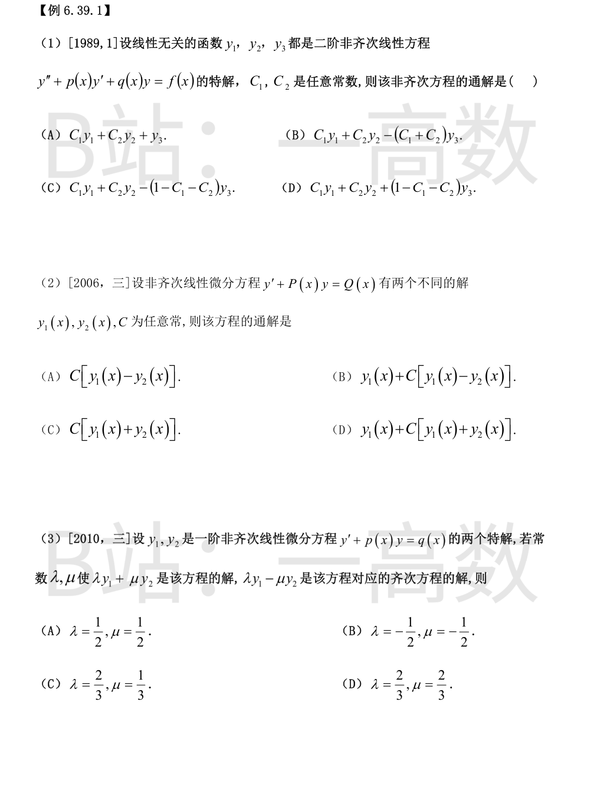

记 $L[y]=y''+p(x)y'+q(x)y$，则 $L[y_i]=f\ (i=1,2,3)$。
由线性性：
$$L[y_1-y_3]=f-f=0,\qquad L[y_2-y_3]=f-f=0,$$
即 $y_1-y_3,\ y_2-y_3$ 都是对应齐次方程的解。
再证它们线性无关：若 $A(y_1-y_3)+B(y_2-y_3)=0$，即 $Ay_1+By_2-(A+B)y_3=0$，由 $y_1,y_2,y_3$ 线性无关得 $A=0,\ B=0,\ A+B=0$，故只有零组合，二者线性无关，为齐次方程的两个线性无关解。
二阶非齐次线性方程通解 = 齐次方程通解 + 非齐次方程任一特解：
$$y=C_1(y_1-y_3)+C_2(y_2-y_3)+y_3=C_1y_1+C_2y_2+(1-C_1-C_2)y_3 .$$
验证：$L[y]=C_1f+C_2f+(1-C_1-C_2)f=f$，确为非齐次方程的解，含两个独立任意常数。故选 (D)。
记 $L[y]=y'+P(x)y$。则 $L[y_1]=L[y_2]=Q(x)$，故
$$L[y_1-y_2]=Q-Q=0,$$
即 $y_1-y_2$ 是对应齐次方程 $y'+P(x)y=0$ 的非零解，从而 $C[y_1-y_2]$ 是齐次方程的通解。
非齐次方程通解 = 齐次通解 + 任一特解：
$$y=y_1(x)+C\,[y_1(x)-y_2(x)].$$
排除其他选项：$(A)$：$L\{C[y_1-y_2]\}=0\neq Q$，只满足齐次方程；$(C)$：$L\{C[y_1+y_2]\}=2CQ$，一般不为 $Q$；$(D)$：$L\{y_1+C(y_1+y_2)\}=(1+2C)Q\neq Q$（一般）。故选 (B)。
记 $L[y]=y'+p(x)y$，则对任意常数 $a,b$ 有 $L[ay_1+by_2]=(a+b)\,q(x)$。
条件一：$\lambda y_1+\mu y_2$ 是非齐次方程的解
$$(\lambda+\mu)\,q(x)=q(x)\ \Rightarrow\ \lambda+\mu=1 .$$
条件二：$\lambda y_1-\mu y_2$ 是齐次方程的解
$$(\lambda-\mu)\,q(x)=0\ \Rightarrow\ \lambda=\mu .$$
联立解得 $\lambda=\mu=\dfrac12$，选 (A)。